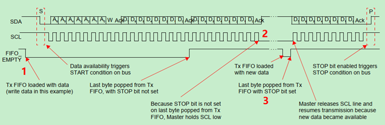

关键流程设计
初始化流程
I2C 模块驱动的初始化流程如下：

传输流程
在 master 驱动中，数据的传输由 xfer 发起，可以完成多个 msg 的传输。传输流程如下：

I2C 模块总线信号
- master transmitter
对图中 3 个关键点的解释：
-
I2C 作为 transmitter 时，当向 TXFIFO 中写入数据时，I2C 模块会自动发出 start 信号
-
若 stop 位未置位，则当 TXFIFO 中的数据全部发送，TXFIFO 为空时，会保持 SCL 为低电平，直到再次向 TXFIFO 中写入数据
-
再次向 TXFIFO 写入数据时，将 stop 位置 1，则在完成该字节的发送后，master 会自动发送 stop 信号
-
- master receiver

对图中 3 个关键点的解释：
-
I2C 作为 receiver 时，当向 TXFIFO 写入读命令(即向 I2C_DATA_CMD 写入读命令) 时，I2C 模块会自动发送 start 信号
-
当接收到 slave 端发送的数据后，只有再次发送一次读命令，才会对本次收到的数据恢复 ACK 确认信号
-
master 在接收到最后一个数据后，回复 NACK，slave 端才会结束数据的传送。在发送最后一个读命令时，同时将 stop 位置位，则 master 在接收到 slave 发送的数据后，I2C 模块会自动发送 NACK 信号
-
I2C 模块的数据传输，无论是 transmitter 还是 receiver，都会用到 TXFIFO，transmitter 时用来发送数据，receiver 时用来发送命令。所以，中断处理中，触发 TXFIFO_EMPTY 中断的，可能是 msg，也可能是 write msg